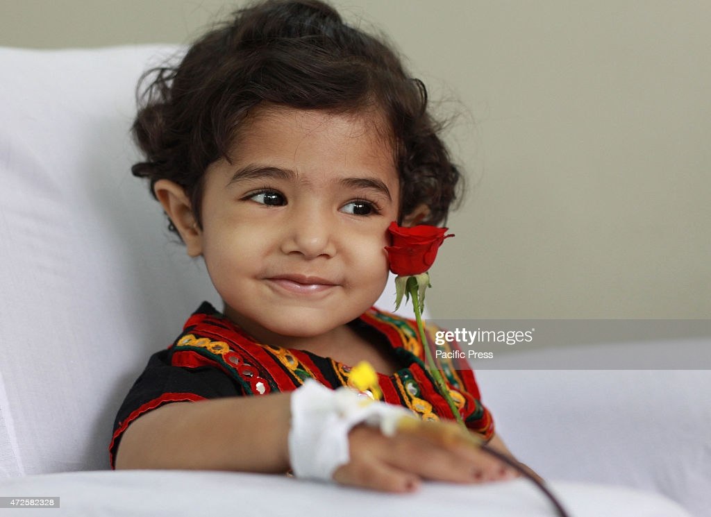

Ever since 2008, Save the Children has initiated and introduced several campaigns for the betterment of children. Covering every aspect, these campaigns are focused on issues ranging from the implementation of child-friendly policies to rehabilitation efforts to creating general awareness about Thalassaeima.
Our campaigns have only been successful because of your help and support. We continue to seek your support which is crucial to bring about social change in the lives of Thalassaeima affected children
OUR CAMPAIGN
Children Free education
Foundation Against Thalassaemia is trying all the time to provide high-quality education to Thalassaemic children. A free computer center was established in the year 2003 to provide computer education to children with Thalassaemia when the computer was not in reach of every one. This center was established in association with the late Shri Gopal Sharma founder M.V.N. School. With the cooperation of Faridabad administration, the fees of Thalassaemic students in private schools of Faridabad are either waived or given concession, for which the Deputy Commissioner and Commissioner Municipal Cooperation Faridabad supporting. We are providing Cycles, copies and books to school going children in collaboration with Bannuwal Welfare Association.
Children CO-Curricular Activities
The Foundation Against Thalassaemia conducts entertainment programs for children from time to time, in this program, children are introduced to world famous people and they enjoy themselves together with like Mr. Narendra Chanchal ji, famous singer Mr. Guru Randhawa, Sapna Chaudhary, Bharti Singh Lalli, Karisma Kapoor, comic poet Surendra Sharma, famous cricket star Kapil Dev Ji, Virender Sehwag.We celebrate every festival with children. Giving gifts to children from time to time
Children Free Health Checkup
The Foundation Against Thalassaemia has been arranging free blood for children with Thalassaemia since last 25 years. Foundation helping since when one unit of blood was donated in blood and they get one unit of blood. Later we met Mr. Rajiv Gandhi, Mrs. Sonia Gandhi, Dr. Manmohan Singh, Dr. A. P.J. Abdul Kalam, Dr. Harsh Vardhan ji and got directions to all blood banks by the government that all blood banks would be give free blood to children suffering from Thalassaemia without any replacement donor, which was a huge achievement for the institution in itself. Free checkup camp is organized by the institution every month. Dr. Amita Mahajan of Indraprastha Apollo Hospital Delhi and her team giving free service for same. Dr. V.K. Khanna of Sir Gangaram Hospital Delhi Dr. Manas Kalra, Dr. Anju Virmani, Dr. Nupur, Dr. Rakesh Gupta periodically checked up

IN THE NEXT 2 MONTHS, WE WILL ASK YOU TO TAKE ACTIONS TO BRING CHANGE, ARE YOU WITH US?
IF YOU ARE WITH US , SO PLEASE CHECK THE BELOW OPTIONS!!!